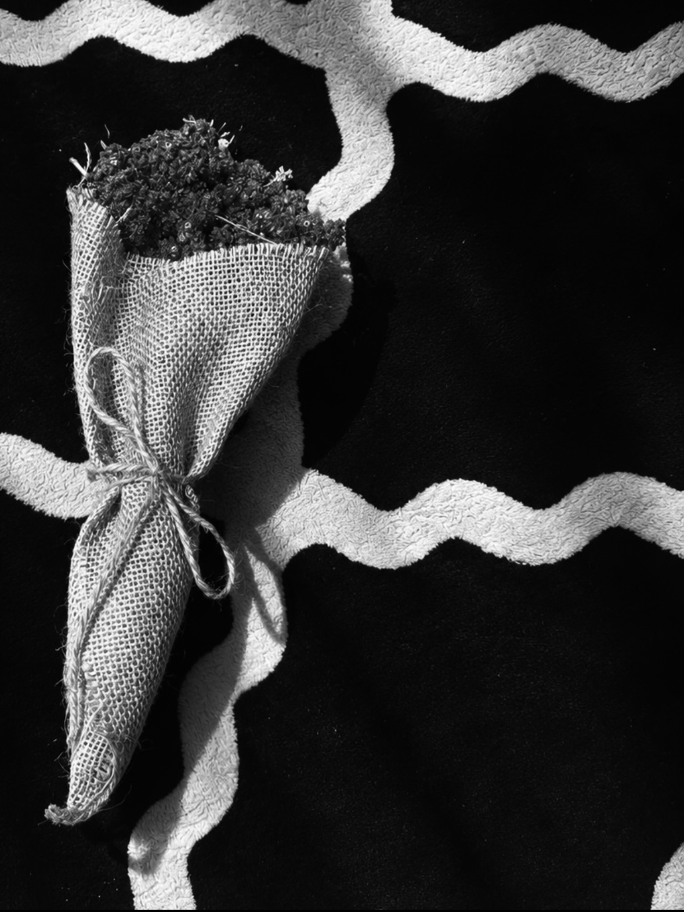

02 / MEMORIES
Some moments become
part of who we are.

My first home, my beloved angel.

For things that are difficult to put into words.
A SMALL ARCHIVE OF BECOMING
A personal archive about growing up, remembering, questioning, and becoming someone I have not met yet.
I'm still figuring things out.
I just graduated Mechanical Engineering, and lately I've been thinking a lot about what comes next—work, further education, the kind of career I want, and eventually, the kind of life I want to build.
I tend to think about things more than I probably need to. Sometimes it's something important, like my future. Other times it's something ridiculously small—a haircut, a photograph, a caption, or a message I haven't sent yet.
I guess I've always cared about the little things.
I'm also quite sentimental, although I don't always show it. Certain songs, old photographs, places, and seemingly ordinary moments tend to stay with me longer than I expect them to.
And some people do too.
There are parts of my past that I still think about from time to time. Not necessarily because I want to return to them, but because I think some people and moments simply become part of who we are.
I question myself a lot.
Whether I'm making the right decisions. Whether I'm trying too hard. Whether I'm doing enough. Whether the person I'm becoming is actually someone I'd be proud of.
I don't have all of those answers yet.
What I do know is that I want to keep moving forward. I want to build a good career, become independent, try things that scare me a little, meet people, make mistakes, learn from them, and hopefully become a little better along the way.
Maybe that's what this website is for.
Not to present a finished version of myself, but to keep small pieces of who I was while I'm still figuring out who I want to become.
I'm not entirely sure who I'll be yet.
But I'd like to find out.

I keep this space for words that are easier to write than to say.
Some letters are meant to be sent. Some are only meant to exist, quietly, somewhere between memory and acceptance.
This section is ready for the original letter whenever I decide to put it here.